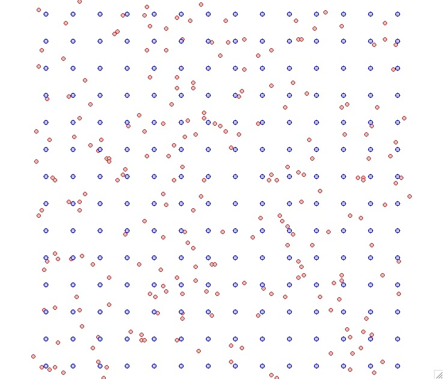
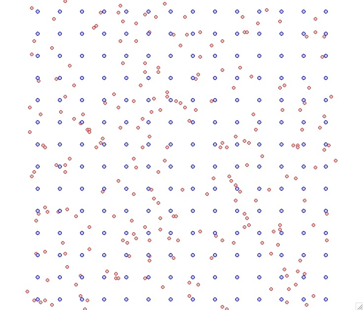
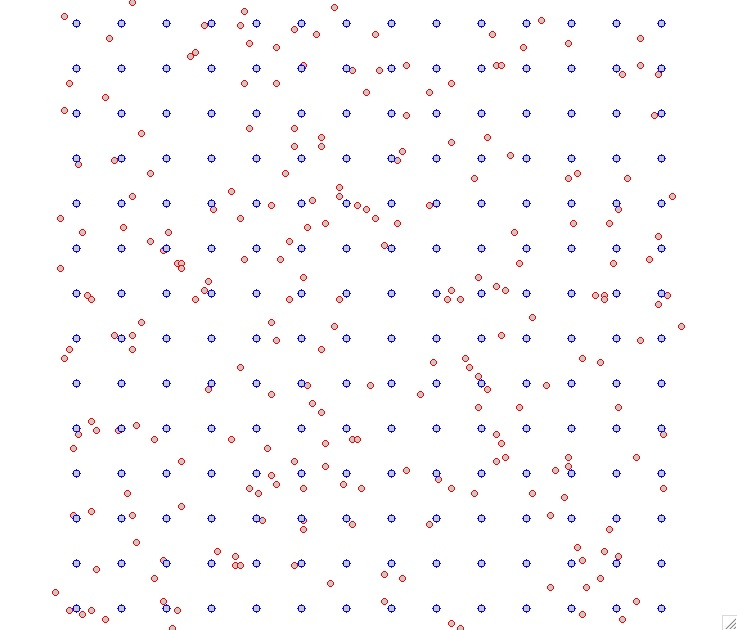

Problem formulation
 

Interpolation: distance between grid points is similar to the average distance between the given points
Simulation: distance between grid points can be much smaller - higher resolution grid
Helena Mitasova, Anna Petrasova, Vaclav Petras
GIS714 Geosimulations NCSU
Derive model of spatial distribution of a variable based on a limited set of discrete scattered observations:
$$ F({\bf r}_j)=z_j,\quad j=1,\ldots ,m $$

Interpolation: distance between grid points is similar to the average distance between the given points
Simulation: distance between grid points can be much smaller - higher resolution grid
 $$ F({\bf r}_j)=z_j,\quad j=1,\ldots ,m $$
$$ F({\bf r}_j)=z_j,\quad j=1,\ldots ,m $$
draw simulation on the board
Splines with tension simulate the behavior of a thin plate with tuneable properties
$$ F({\bf r})=T({\bf r})+\sum_{j=1}^m \lambda_j R({\bf r},{\bf r}_j)\, $$
Bivariate smoothness seminorm with weighted squares of first and second derivatives leads to thin plate spline with tension , when all derivatives are used with decreasing weight we get regularized spline with tension . We minimize curvatures / energy of the surface.
Thin plate spline with tension is then
$$
F({\bf r})=a_0 + \sum_{j=1}^N \lambda_j
\left[ {\rm K_0} (\varphi r/2) + \ln(\varphi r/2) + C \right]
$$
where $K_0(.)$ is the Bessel function and $\varphi$ is tension parameter,
$C$ is constant. The function simulates a flexible thin steel plate (low tension)
through rubber sheet (high tension).

Splines have both physical and geostatistical interpretation: see supplemental material
Trivariate thin plate spline with tension

Distribution of nitrogen concentrations in Chesapeake Bay